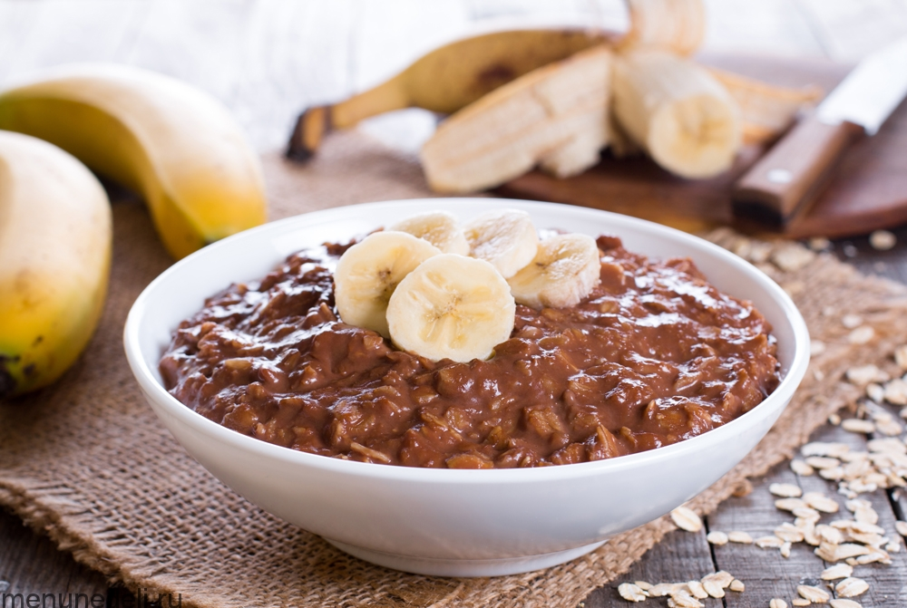

Рецепт недели: Гранатовый сок
1. Пельмени из теста на воде, минералке, молоке.

Для приготовления теста для пельменей вам понадобятся следующие ингредиенты:
- 300 мл кефира
- 1 ч.л. соли
- 450 г муки
Пошаговый рецепт теста для пельменей:
- В миске смешайте кефир и соль.
- Постепенно добавляйте муку, замешивая тесто ложкой или руками.
- Выложите тесто на стол, посыпанный мукой, и замесите его до эластичности.
- Скатайте тесто в шар, заверните в пищевую пленку и оставьте на 30 минут.
- Раскатайте тесто в тонкий пласт и вырежьте кружочки для пельменей.
2. Шоколадная овсяная каша с персиками и сливками.
Для приготовления шоколадной овсяной каши с персиками и сливками вам понадобятся следующие ингредиенты:
- 200 г овсяных хлопьев
- 500 мл сливок 33%
- 2 ст.л. какао-порошка
- 50 г темного шоколада
- 2 персика
- 2 ст.л. сахара
Пошаговый рецепт шоколадной овсяной каши с персиками и сливками:
- В кастрюле смешайте сливки и какао-порошок. Доведите до кипения, помешивая.
- Добавьте овсяные хлопья и сахар. Снизьте огонь и варите кашу, помешивая, около 15 минут, пока она не загустеет.
- Нарежьте шоколад на мелкие кусочки и добавьте в кашу. Перемешайте, пока шоколад не растает.
- Нарежьте персики на кубики и добавьте в кашу. Перемешайте и снимите с огня.
- Разложите кашу по тарелкам и подавайте горячей или холодной.
3. Сырники с морковью, кумином и кориандром.

Для приготовления сырников с морковью, кумином и кориандром вам понадобятся следующие ингредиенты:
- 500 г творога
- 2 яйца
- 3 ст.л. муки
- 1 ч.л. соли
- 1 ч.л. сахара
- 1 ч.л. кумина
- 2 ст.л. нарезанного свежего кориандра
- 1 морковь
- 3 ст.л. растительного масла
Пошаговый рецепт сырников с морковью, кумином и кориандром:
- В миске смешайте творог, яйца, муку, соль, сахар, кумин и кориандр. Замесите однородное тесто.
- Натрите морковь на крупной терке и добавьте в тесто. Перемешайте.
- Сформируйте из теста небольшие круглые сырники. Обваляйте их в муке с обеих сторон.
- Разогрейте сковороду с растительным маслом на среднем огне. Обжаривайте сырники по 3-4 минуты с каждой стороны, пока не появится золотистая корочка.
- Выложите сырники на бумажные полотенца, чтобы удалить лишнее масло. Подавайте сырники горячими или теплыми с сметаной, джемом или медом.
4. Рецепт Безе.